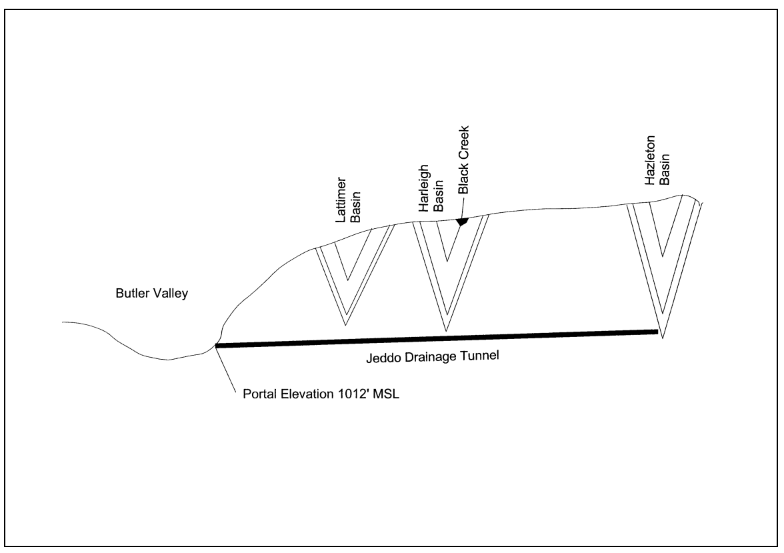
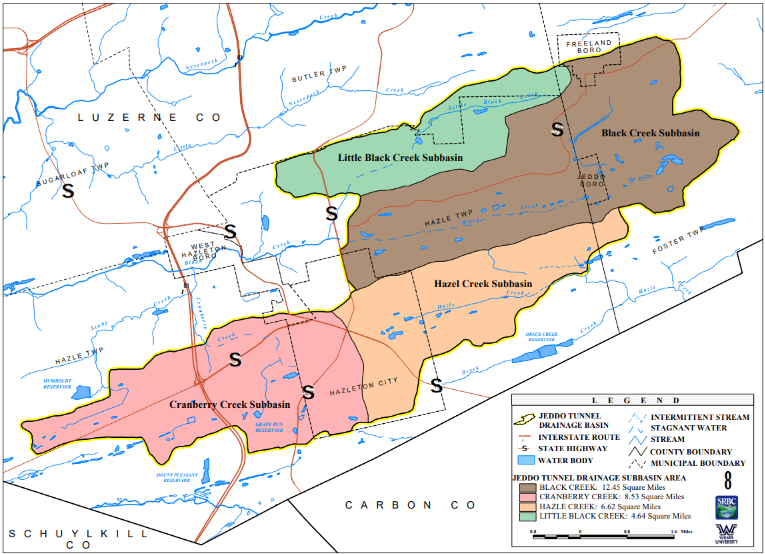
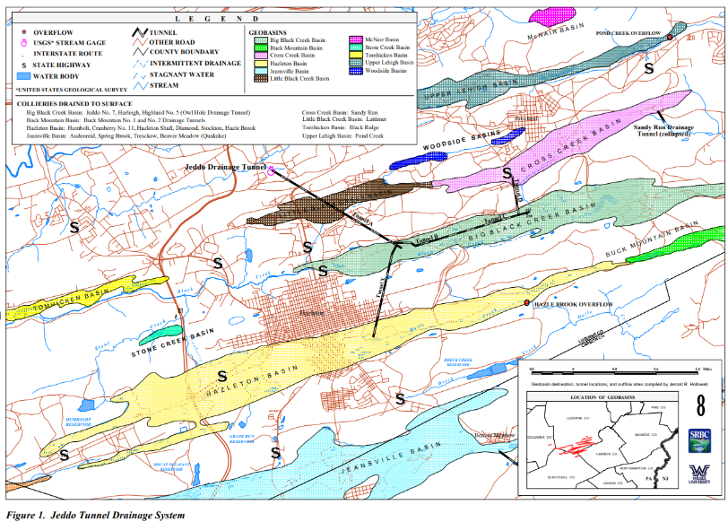
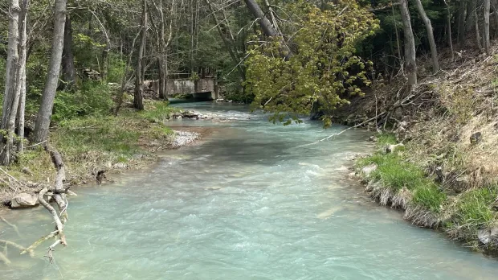

What was once a strategic drainage asset for industry is now something equally important: a modern environmental monitoring site. The water emerging from historic mine systems may contain dissolved metals, sulfate, acidity, suspended solids, and other indicators of long-term geochemical reactions underground.
For researchers, engineers, and watershed advocates, the Jeddo Tunnel offers a rare opportunity to study how historic subsurface infrastructure continues to influence present-day water quality. For Keystone Water Initiative, this site represents a clear next step in field-based Pennsylvania water research.
Why the Tunnel Was Built
During the late 1800s, underground anthracite mining expanded rapidly across the Hazleton coal basin. As workings advanced deeper and interconnected between collieries, groundwater infiltration and storm recharge became persistent operational threats. Flooded gangways, submerged chambers, and rising mine pools could halt production, damage equipment, and significantly increase pumping costs.
The Jeddo Mine Tunnel was developed as a gravity drainage system designed to lower hydraulic head within portions of the mine network. By creating a lower-elevation outlet, accumulated water could discharge naturally rather than relying entirely on energy-intensive pumping systems.
In engineering terms, the tunnel functioned as a regional dewatering control measure. Lowering mine-water elevations increased accessibility to coal reserves, improved operational safety, and reduced the economic burden of continuous pumping.

A Hydrologic System That Never Fully Shut Down
Although large-scale deep anthracite mining declined decades ago, abandoned mine voids often remain hydrologically active. Water can continue entering historic workings through precipitation infiltration, fractured bedrock pathways, shallow groundwater recharge, collapsed surface openings, interconnected shafts and gangways, and adjacent flooded mine pools.
Once inside the system, water moves through underground pathways governed by elevation gradients, available void space, and subsurface connectivity. In many legacy coal regions, tunnels such as Jeddo still act as engineered discharge points for large mine-water basins.
This makes the site valuable not only historically, but scientifically. It is effectively an accessible outlet of a much larger underground hydrogeologic system.


Why Water Quality Matters Here
When oxygenated water interacts with sulfide-bearing rock exposed during mining, geochemical oxidation reactions can occur. One of the most common involves pyrite oxidation, which may generate acidity and mobilize dissolved metals. Depending on mineralogy, residence time, buffering capacity, and flow conditions, mine drainage may exhibit varying water chemistry.
These parameters help characterize whether discharge is acidic, net alkaline, metal-loaded, seasonally variable, or potentially treatable through passive systems.
Why the Jeddo Tunnel Is an Ideal Research Site
Many abandoned mine systems are difficult to access or poorly defined. The Jeddo Tunnel is different because it provides a concentrated, observable discharge point where water from a larger underground system emerges into the surface watershed.
Rather than chasing diffuse seepage points, investigators can sample a major outfall. Discharge rate can also be compared with concentration data to estimate pollutant mass loading:
Load = Concentration × Flow
This is critical because environmental impact depends not only on concentration, but total mass released over time. Storm events, snowmelt, drought, and recharge cycles may change both flow and chemistry.

What Keystone Water Initiative Plans to Do Next
The next phase of this project is direct field investigation centered on water-quality sampling and analysis. Our goal is to develop a scientifically credible baseline dataset for the Jeddo Tunnel discharge and surrounding receiving waters.
Keystone Water Initiative aims to analyze water for dissolved metals, mineral ions, sulfate concentration, pH, alkalinity, conductivity, turbidity, total suspended solids, temperature, flow, and potential modern pollutants where relevant.
A modern dataset can help answer important questions: Is the discharge strongly acidic or buffered? Which metals dominate the chemistry? How much pollutant mass may be entering downstream waters? Does chemistry shift after rainfall events? Are there signs of additional contamination sources beyond classic abandoned mine drainage?
Beyond History: A Pennsylvania Water Legacy
The Jeddo Mine Tunnel should not be viewed only as a remnant of the coal era. It is an active hydraulic outlet connected to legacy land use, regional geology, and modern watershed health.
Across Pennsylvania, many waterways still reflect decisions made over a century ago. The challenge now is to apply current science, engineering, and public stewardship to understand and improve those systems.
The coal industry built the tunnel to move water efficiently. Today, that same flow can provide something different: data. By sampling and studying the Jeddo Mine Tunnel, Keystone Water Initiative can better understand abandoned mine drainage processes, quantify ongoing impacts, and identify realistic restoration pathways for northeastern Pennsylvania streams.
Why This Matters for Pennsylvania
The Jeddo Mine Tunnel is more than a historic structure. It is an active part of today’s watershed. Understanding legacy mine drainage is essential for protecting streams, supporting communities, and guiding science-based restoration.
Science for clean water.
Communities for life.
References
Ballaron, P.B. 1999. Water Balance for the Jeddo Tunnel Basin, Luzerne County, Pennsylvania. Susquehanna River Basin Commission, Publication No. 208.
Hollowell, J.R. 1999. Surface Overflows of Abandoned Mines in the Eastern Middle Anthracite Field. Susquehanna River Basin Commission, Publication No. 207.